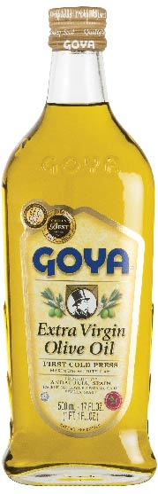
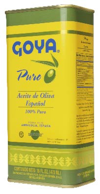
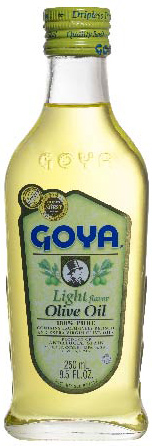

SI ES CUARESMA, tiene que ser aceite de oliva

Recetas
ACEITES DE OLIVA

Aceite de Oliva Extra Virgen
Nuestro Aceite de Oliva Extra Virgen esta hecho de la primera prensada de las mejores aceitunas españolas, y tiene un intenso sabor y aroma. Es tan delicioso en su estado natural como en ensaladas, viandas o para cocinar tus platos favoritos.

Aceite de Oliva Puro
Para aquellos que aman el sabor del aceite de oliva pero prefieren una fragancia ligeramente más suave, el Aceite de Oliva Puro es la elección correcta. Es perfecto en salsas, arroces, para saltear y sofreír. Le da gran sabor a cualquier comida que usted quiera preparar.

Aceite de Oliva Light
Es nuestro aceite de oliva con un sabor más suave. Tiene las mismas propiedades saludables que nuestros otros aceites de oliva pero con un sabor muy delicado. Úselo para hornear y para otros platos que demanden su sutil sabor.